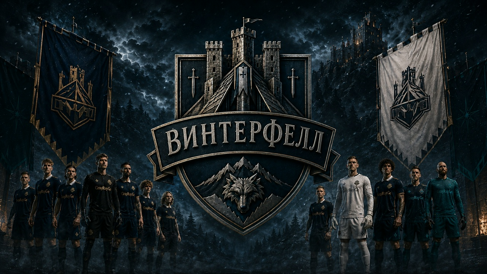

Формирование команды
«Винтерфелл» задуман как объединение игроков, для которых футбол является направлением системного роста. В основе клуба лежат самоотдача, дисциплина, командная ответственность и постепенное движение к профессиональному уровню.
Клуб создается как спортивная система с акцентом на дисциплину, понятную внутреннюю организацию и формирование собственного узнаваемого образа. Основной вектор развития направлен на укрепление состава, участие в матчах и переход к более высокому уровню футбольной среды.

«Винтерфелл» задуман как объединение игроков, для которых футбол является направлением системного роста. В основе клуба лежат самоотдача, дисциплина, командная ответственность и постепенное движение к профессиональному уровню.
Клуб стремится не только участвовать в матчах, но и выстроить устойчивую спортивную среду с собственным стилем, сильным визуальным образом и постоянной связью с аудиторией через цифровое пространство.

Командное фото подчеркивает целостность состава, единство клубного образа и атмосферу, вокруг которой строится развитие «Винтерфелла».
Логотип, комплекты формы и клубная палитра формируют цельный визуальный образ, который делает «Винтерфелл» узнаваемым и цельным как внутри команды, так и для аудитории.